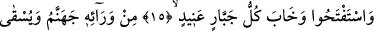

İNATÇI ZORBA
HELÂK OLDU
13. “İnkâr edenler, peygamberlerine dediler ki: ‘Ya sizi mutlaka yurdumuzdan
çıkarırız, ya da bizim dînimize dönersiniz.’ Rableri de onlara şöyle vahyetti:
“Zâlimleri mutlaka helâk edeceğiz.”
14. “Ve (ey inananlar!) onların ardından sizi o yere yerleştireceğiz. Bu,
makamımdan korkan ve tehdidimden sakınan kimselere mahsustur.”
15. (Peygamberler) fetih (yardım) istediler (Allah da verdi). Her inatçı zorba
perişan oldu.
16. Ardından da (o inatçı zorbaya) cehennem vardır; kendisine irinli su
içirilecektir.
17. Onu yudumlamaya çalışır, fakat boğazından geçiremez ve her yandan ona
ölüm geldiği halde yine ölemez. Bunun ardından da çetin bir azab vardır.
“İnkâr edenler, peygamberlerine dediler ki: “Ya sizi mutlaka yurdumuzdan”
şehrimizden ve memleketimizden “çıkarırız, ya da dînimize dönersiniz.” yâni bizim
dînimizin bir mensûbu hâline gelirsiniz. Çünkü zâten peygamberler hiçbir zaman onların
dîninde olmamışlardı. Ancak peygamber seçilmezden önce görünür bir muhâlefet
göstermedikleri için onların kendi dinlerinden olduklarını sanıyorlardı. İşte bu yüzden
vehimlerine dayanarak böyle konuşuyorlardı.
Buradaki fiil, hakikî anlamda ‘dönmek’ mânâsında da olabilir. O zaman hitap hem
peygamberlere hem de onlara tâbi olanlara olmuş olur. Bu durumda tâbi olanlar adına
peygamberlere hitâb edilmiştir. Yâni “Dînimize girersiniz ve dînimize geri dönersiniz.’
demektir.
Bütün bu ifâdeler, kendisinden önceki peygamberler sabrettiği gibi, müşriklerin
eziyetlerine sabretmesi için Hz. Peygamber (a.s.)’a bir tesellîdir.
“Rableri de”; yâni tüm işlerinin sâhibi Allah da inkârları artık son raddeye varmış